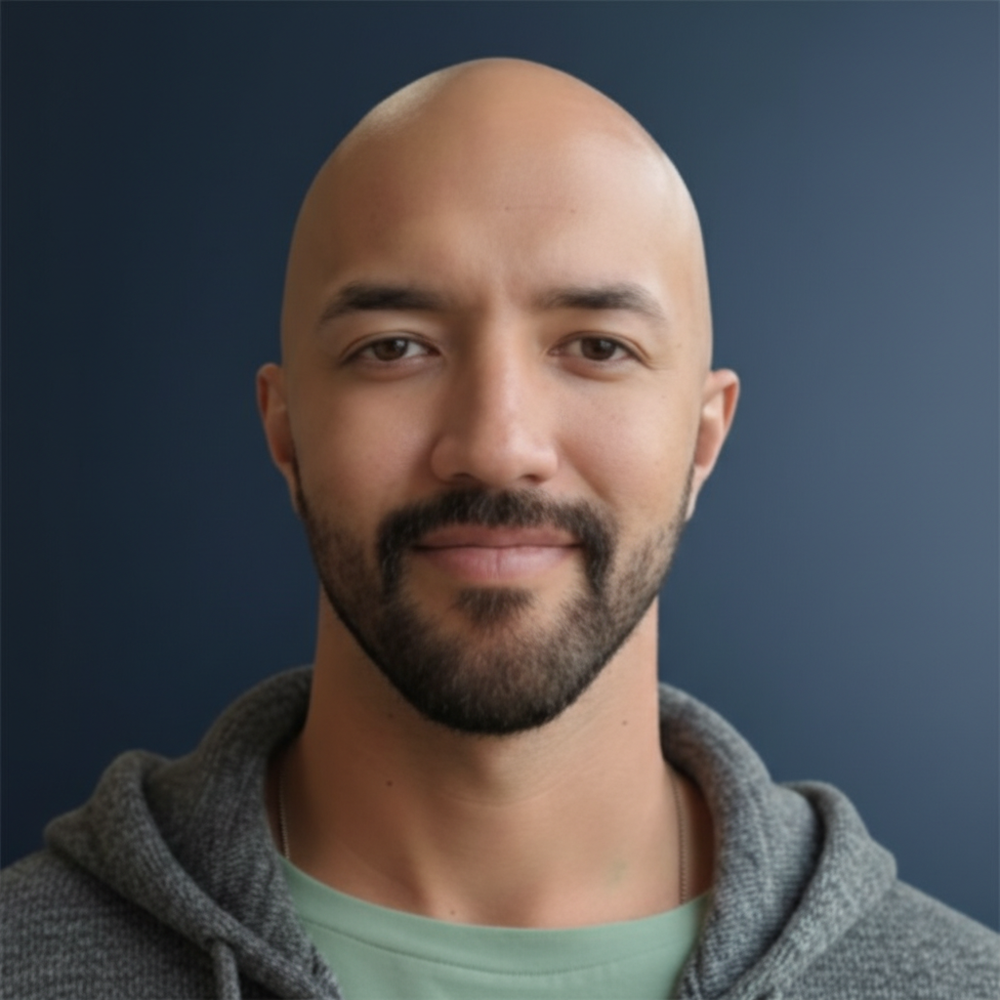

Researcher · AI/ML Engineer
Researcher investigating how humans learn, move, and form relationships with intelligent systems. Graduate work in kinesiology and computer science, shaped by military aviation, rehabilitation science, and artificial intelligence. Applying to PhD programs in Human-Centered AI.
Competitive athletics from adolescence through graduate school (track and field, distance running, strength sport) gave him a practitioner’s understanding of motor learning, physiological adaptation, and the body’s capacity for change. That sustained attention to embodied experience carried directly into academic work.
At San Diego State University he earned his bachelor’s in kinesiology with honors; at California Baptist University, his master’s. His thesis proposed a randomized controlled trial examining yoga intervention for overuse injury prevention in distance runners, integrating multimodal data collection (EMG, goniometry, postural analysis), full IRB protocol, and a literature review of twenty peer-reviewed articles in biomechanics, neuromuscular physiology, and motor control. The work surfaced a limitation that would define his next move: analog methods could not capture the dynamic complexity of human physiology in real time. That pointed toward computation.
He is currently completing an M.S. in Computer Science (AI/ML) at Western Governors University and founded Meridian Labs: twenty production apps, over fifty-five thousand exam questions, algorithms grounded in cognitive science. The single-researcher workflow, orchestrating large language models across the full product lifecycle, has itself become a subject of inquiry in human-AI collaboration.
Trilingual in English, German, and Spanish. Has lived in Germany, Costa Rica, Peru, Indonesia, and the United States.
Anthony grew up at the forest’s edge in Freihung, a village of 2,500 in Bavaria’s Upper Palatinate, raised by his German mother and grandparents, his grandmother Bavarian, his grandfather Latvian. It was a traditional place, close to the land, where lederhosen and dirndl were the texture of daily life rather than folklore. He and his two siblings were the only mixed-race children in a uniformly Bavarian village, a fact that demanded, from early on, a fluency in social codes that others could take for granted.
His education was entirely within the German system, from kindergarten through graduation. When the family moved to Kaiserslautern, a larger city with a school serving Russian and Turkish immigrant families, even his subtle Bavarian accent set him apart. At sixteen his mother remarried a U.S. soldier, and the context changed entirely: an American military high school where his conversational English, picked up from his mother and American media, carried him socially but fell short of the academic fluency the classroom demanded. Two years of ESL closed that gap. But the experience of inhabiting a language you can feel your way through but not yet think in stayed with him, as did the instinct, sharpened by each transition, for reading a room.
At twenty, he enlisted from Ramstein Air Base and left Europe for the first time. After aircrew training and SERE survival school, he was assigned to the 21st Airlift Squadron at Travis Air Force Base as a C-17 Loadmaster. Over four and a half years he flew 455 sorties and logged nearly two thousand flight hours across three theaters of operation. He chose to separate a year before his enlistment ended, his health declining, and received an Honorable Discharge in 2014.
The years after the military were difficult. He had come home with a PTSD diagnosis, and the prescribed approaches weren’t reaching him. He began looking elsewhere: first to the body, through deliberate physical practice and the study of how the nervous system can be retrained; then to consciousness itself, traveling in 2017 to the Peruvian Amazon to sit with Shipibo healers in traditional ayahuasca ceremony.
What he encountered there changed the question. Consciousness was not a byproduct of biology to be explained away; it was something that could be observed, investigated, and perhaps deliberately engaged.
The years that followed took him through Costa Rica, Peru, and Indonesia, working remotely in emerging technology and fintech while immersing in yoga, meditation, breathwork, and the contemplative traditions of each place. He pared life down to practice and inquiry, and what began as personal necessity sharpened over years into what Varela and Shear describe as first-person methods, disciplined approaches to investigating subjective experience from the inside.
The questions he now brings to computation were lived long before they were formulated.